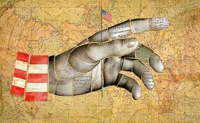
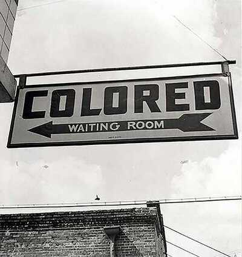

1 HISTÓRIA DO IMPERIALISMO
O imperialismo nos Estados Unidos teve seu início no final do século XIX e início do século XX, quando o país começou a buscar sua expansão territorial e influência no cenário internacional. Durante esse período, os Estados Unidos conquistaram diversas colônias, como Porto Rico, Filipinas, Guam e Samoa Americana, além de estabelecerem seu controle sobre o Havaí e o Alasca. (COUNTERPUNCH, 2023)
O imperialismo americano também se caracterizou por sua política de "portas abertas", que buscava garantir o acesso das empresas americanas aos mercados internacionais e a exploração de recursos naturais em outros países. Essa política foi implementada principalmente na América Latina e na Ásia, onde os Estados Unidos estabeleceram relações comerciais e políticas com diversos países. (COUNTERPUNCH, 2023)
Figura 8 - Faces contemporâneas do imperialismo
Fonte: OUTRAS PALAVRAS, 2023
"O imperialismo é a mais alta forma de corrupção política, econômica e social." - Julius Nyerere, líder da Tanzânia e defensor da independência africana.
2 JIW CROWN LAWS
As Jim Crow laws foram leis segregacionistas que vigoraram nos Estados Unidos entre os anos de 1876 e 1965, principalmente nos estados do sul do país. Essas leis tinham como objetivo impor a segregação racial e manter a supremacia branca, negando direitos civis e políticos aos afro-americanos. (AMERICAN EXPRESS, 2023)
Entre as principais medidas adotadas pelas Jim Crow laws estavam a proibição do casamento inter-racial, a segregação em locais públicos como escolas, restaurantes, cinemas e transportes, a negação do direito de voto aos afro-americanos e a proibição de participação de negros em júris populares. (AMERICAN EXPRESS, 2023)
Os EUA era um país extremamente racista, as Jim Crow Laws foram inclusive uma forte influência para a criação das leis anti-semitas de Nuremberg, entre as pessoas que foram para Nova York e trouxeram as influências das leis de segregação racial norte-americana foi Ludwig Fischer o governador do distrito de Varsóvia e que no futuro iria ajudar a criar os guetos de Varsóvia um lugar sujo e cheio de doenças para onde os Judeus foram obrigados a ficar. (AMERICAN EXPRESS, 2023)
Figura 9 - Placa de segregação racial
Fonte: AMERICAN EXPRESS, 2023
As Jim Crow laws foram uma forma de institucionalização da discriminação racial e de perpetuação da segregação no sul dos Estados Unidos, com consequências que duraram décadas. A luta contra essas leis foi um dos principais movimentos sociais do século XX nos Estados Unidos, liderado por ativistas como Martin Luther King Jr. e culminando na aprovação da Lei dos Direitos Civis de 1964 e da Lei dos Direitos de Voto de 1965. (AMERICAN EXPRESS, 2023)
4 PAÍSES INVADIDOS
Os Estados Unidos têm uma longa história de intervenções militares em outros países, que remonta ao século XIX. Embora o número exato de países invadidos ou intervencionados pelos Estados Unidos possa variar de acordo com a fonte e a definição utilizada, algumas falam que ao todo foram 81 países invadidos, outras falam em mais de 50, mas é inegável que os EUA invadiram muitos países para impor sua hegemonia, aqui estão alguns exemplos de países em que os Estados Unidos intervieram militarmente:
- México (1846-1848)
- Filipinas (1899-1902)
- Porto Rico (1898)
- Cuba (1898)
- Nicarágua (1912-1933)
- Haiti (1915-1934)
- República Dominicana (1965-1966)
- Vietnã (1964-1973)
- Iraque (1991 e 2003)
- Afeganistão (2001-2021)
Além desses exemplos, há muitos outros países em que os Estados Unidos intervieram de maneira mais sutil ou indireta, por meio de apoio a regimes autoritários, financiamento de grupos rebeldes, sanções econômicas, entre outras medidas. (CODEPINK, 2023)
É importante lembrar que a intervenção militar dos Estados Unidos em outros países é um tema controverso e complexo, com diferentes perspectivas e interpretações. Algumas pessoas veem a intervenção como uma forma de promover a democracia e os direitos humanos, enquanto outras a criticam como uma forma de imperialismo e opressão. (CODEPINK, 2023)
"Os Estados Unidos têm a força, mas não têm razão." - Pablo Neruda, poeta chileno, em referência à intervenção
"Não podemos exportar democracia com tanques e metralhadoras." - Barack Obama, ex-presidente dos Estados Unidos, sobre a invasão do Iraque.
Figura 10 - Ex-presidente dos EUA Barack Obama

Fonte: Wikipedia, 2023